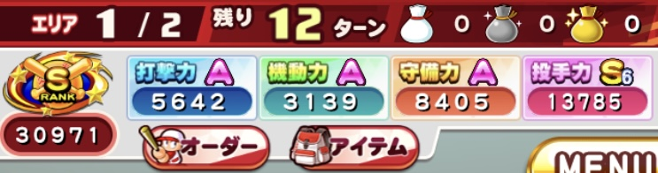
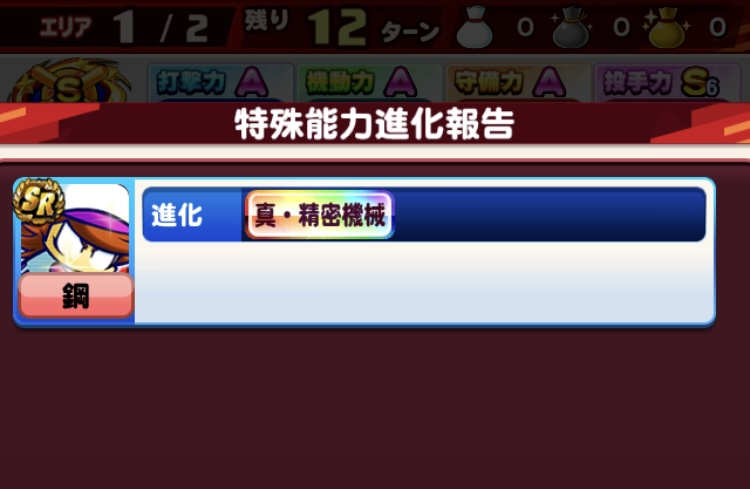
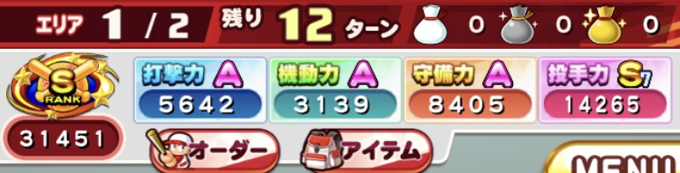

パワクエ 西球記
虹特の査定まとめ
西球記の神前試合で手に入る虹特17種類の査定を、管理人の実測でまとめました。
調べ方
西球記では、神前試合に勝つと、選手が持っている金特が虹特（真・〇〇）に進化します。進化した時には「+〇〇」の画面が出ないため、進化の前と後のチームランク（打撃力・機動力・守備力・投手力）の差から査定を割り出しました。
例として、先発の鋼が真・精密機械に進化した時の画面です。
① 進化の前

② 特殊能力進化報告

③ 進化の後

投手力が13785から14265に上がり、ほかの3つは変わっていないので、真・精密機械（先発）の査定は+480と分かります。
虹特は、元の金特と下位の青特を持っている選手だけが進化できます。そのため、表の「単独」は虹特だけで増える査定、「合計」は虹特・金特・青特を全部合わせた査定です。
- 野手はスタメン（メインポジション）、投手は先発で測りました。
- ベンチは打撃力・守備力がスタメンの1/5、機動力が2/5、中継ぎ・抑えは先発の1/2です。虹特でもこの決まりどおりになることを、真・安打製造機（ベンチ）と真・変幻自在（抑え）で確かめました。
- サブポジションで出た時は、金特・青特と同じく守備の査定が適性どおりに下がります。真・ストライク送球をサブポジ△（一塁）で測ると守+300で、メイン（375）の0.8倍でした。
野手の虹特の査定
| 虹特 | 単独 （スタメン） | 単独 （ベンチ） | 合計 （スタメン） |
|---|---|---|---|
| 真・ | 375 打375 | 75 打75 | 640 |
| 真・ | 425 打300・機125 | 110 打60・機50 | 635 |
| 真・ | 330 守330 | 66 守66 | 625 |
| 真・ | 410 打410 | 82 打82 | 620 |
| 真・ | 385 打385 | 77 打77 | 620 |
| 真・ | 375 守375 | 75 守75 | 610 |
| 真・ | 375 打375 | 75 打75 | 610 |
| 真・ | 340 打240・機100 | 88 打48・機40 | 610 |
| 真・ | 0 0 | 0 0 | 235 |
※真・左キラーは、進化しても査定が上がりませんでした（スタメン・メインポジションでも0）。ゲーム内の不具合の可能性があるため、変わったら測り直します。
投手の虹特の査定
投手の虹特は、すべて投手力だけが上がります。
| 虹特 | 単独 （先発） | 単独 （中継ぎ・抑え） | 合計 （先発） |
|---|---|---|---|
| 真・ | 510 | 255 | 744 |
| 真・ | 480 | 240 | 744 |
| 真・ | 480 | 240 | 744 |
| 真・ | 450 | 225 | 744 |
| 真・ | 516 | 258 | 738 |
| 真・ | 396 | 198 | 738 |
| 真・ | 540 | 270 | 726 |
| 真・ | 456 | 228 | 708 |
虹特に進化できる対戦相手
どの虹特に進化できるかは、対戦相手ごとに決まっています。※は11/26までの期間限定の対戦相手です。
野手の虹特
| 虹特 | 候補数 | 対戦相手 |
|---|---|---|
| 真・ | 3 | マントル野球流、鳴響野球流、ほかほか野球流 |
| 真・ | 5 | マントル野球流、大筒野球流、フリート野球流、超最強野球流、白轟野球流 |
| 真・ | 1 | あかつき野球流 |
| 真・ | 8 | 良牙チーム※、スパルタ野球流、討総野球流、ワールド野球流、支良州水産野球流、円卓野球流、裏あかつき野球流、赤壁野球流 |
| 真・ | 3 | シャンプーチーム※、ワールド野球流、瞬鋭野球流 |
| 真・ | 3 | アスレテース野球流、くろがね野球流、ゲノム野球流 |
| 真・ | 6 | 討総野球流、北雪野球流、あかつき野球流、花丸野球流、長命野球流、ロマン開花野球流 |
| 真・ | 7 | 乱馬チーム※、ときめき青春野球流、アスレテース野球流、北雪野球流、メカニクス野球流、彩菊花野球流、天空中央野球流 |
| 真・ | 3 | くろがね野球流、メカニクス野球流、恋恋野球流 |
投手の虹特
| 虹特 | 候補数 | 対戦相手 |
|---|---|---|
| 真・ | 7 | 覇堂野球流、天盟野球流、ときめき青春野球流、エジプト野球流、超最強野球流、裏あかつき野球流、長命野球流 |
| 真・ | 7 | 乱馬チーム※、聖タチバナ野球流、恋恋野球流、聖ジャスミン野球流、フリート野球流、アンドロメダ野球流、赤壁野球流 |
| 真・ | 1 | 白轟野球流 |
| 真・ | 3 | シャンプーチーム※、聖タチバナ野球流、ほかほか野球流 |
| 真・ | 1 | 帝王実業野球流 |
| 真・ | 8 | 天盟野球流、支良州水産野球流、鳴響野球流、円卓野球流、花丸野球流、ゲノム野球流、天空中央野球流、ロマン開花野球流 |
| 真・ | 5 | 覇堂野球流、スパルタ野球流、彩菊花野球流、アンドロメダ野球流、瞬鋭野球流 |
| 真・ | 5 | 良牙チーム※、大筒野球流、帝王実業野球流、聖ジャスミン野球流、エジプト野球流 |
チームランク更新を狙う上で意識する事
※ここからの話は、パワクエ用の選手も育成してチームランク更新を狙う超上級者向けの話になります。
チームランク更新を狙うなら、コーチで金特を伝授してから、神前試合で虹特に進化させるのが効率的です。ここでは、次の条件で一番査定が高くなる取り方を計算しました。
- チームは先発3人・中継ぎ5人・抑え1人・野手スタメン8人・ベンチ野手8人
- 特殊能力を持っていない選手に、コーチで金特を最大8個伝授する
- 神前試合は最大11回（むちゃクエで確認できた神前試合の最大回数）、1回で虹特は4個獲得（特能進化+3の効果）（最大44個虹特獲得）
- 期間限定の対戦相手は使わない。真・左キラーは査定0なので入れない
伝授してから進化させるなら「合計」で比べる
金特を伝授してから虹特にする場合、増える査定は虹特の単独の値ではなく、金特と下位の青特も込みの「合計」です。合計で比べると、野手の虹特は真・ローリング打法（640）が一番高く、次が真・安打製造機（635）です。投手の虹特は8種類とも708〜744で、野手の虹特より高くなります。
候補が5個以上だとランダムになる
神前試合の対戦相手には進化対象の虹特が2つあり、チームの中でその金特を持っている選手が候補になります。候補が5個以上あると、その中からランダムで4個が進化します。誰に進化してほしいかは選べないので、対戦相手を選ぶ順番が大事です。
- 先に別の対戦相手で進化させて、候補を4個以下に減らしてから戦う
- 進化対象の片方を誰も持っていない対戦相手を選ぶと、もう片方だけを狙って進化させられる（例：討総野球流は勝負師を誰も持っていなければ、アーチストだけが進化）
査定が一番高くなる伝授（+30,338）は、ランダムの結果によっては最後に取りこぼしが出ます。運に関係なく必ず取りきれる伝授と順番は、次のとおりです（+29,585、虹特43個）。
| 起用 | 伝授する金特 |
|---|---|
| 先発3人 | 鉄腕・鉄仮面・怪物球威・変幻自在・精密機械・金縛り・怪童を3人全員、強心臓を2人 |
| 野手 | ローリング打法を8人、アーチストを6人、安打製造機を5人、広角砲を1人 |
| 回 | 対戦相手 | 進化する虹特 |
|---|---|---|
| 1 | 討総野球流 | アーチスト×4 |
| 2 | 瞬鋭野球流 | 鉄腕×3、広角砲×1 |
| 3 | 支良州水産野球流 | ランダムで「怪童×2、アーチスト×2」か「怪童×3、アーチスト×1」 |
3回目が「怪童×2、アーチスト×2」の時
| 回 | 対戦相手 | 進化する虹特 |
|---|---|---|
| 4 | 天盟野球流 | 怪物球威×3、怪童×1 |
| 5・6 | 鳴響野球流（2回） | ローリング打法×4（2回で8） |
| 7 | マントル野球流 | 安打製造機×4 |
| 8 | 白轟野球流 | 精密機械×3、安打製造機×1 |
3回目が「怪童×3、アーチスト×1」の時
| 回 | 対戦相手 | 進化する虹特 |
|---|---|---|
| 4・5 | 鳴響野球流（2回） | ローリング打法×4（2回で8） |
| 6 | マントル野球流 | 安打製造機×4 |
| 7 | 裏あかつき野球流 | 怪物球威×3、アーチスト×1 |
| 8 | 白轟野球流 | 精密機械×3、安打製造機×1 |
9回目からはどちらも同じ
| 回 | 対戦相手 | 進化する虹特 |
|---|---|---|
| 9 | 聖ジャスミン野球流 | ランダムで「変幻自在×2、強心臓×2」か「変幻自在×3、強心臓×1」 |
| 10 | 聖タチバナ野球流 | 金縛り×3（9回目で変幻自在が2個の時は、変幻自在×1も） |
| 11 | 帝王実業野球流 | 鉄仮面×3（9回目で強心臓が1個の時は、強心臓×1も） |
中継ぎ・抑えには怪童・金縛りを伝授しない
中継ぎ・抑えの査定で一番高い金特は怪童、7番目は金縛りです。ですが、中継ぎ・抑えの6人が怪童・金縛りを持っていると、神前試合の候補が3個から9個に増えてしまいます。誰が持っているかは区別されないので、先発の怪童・金縛りを必ず取りきるには、中継ぎ・抑えの分まで全部進化させる必要があり、神前試合の回数が足りなくなります。
そこで、中継ぎ・抑えには怪童・金縛りの代わりに、9番目・10番目に高い金特を伝授します（走者釘付、超尻上がり・本塁打厳禁など）。中継ぎ・抑えの査定は1人39、6人で234下がりますが、先発やスタメンの虹特を取りこぼすよりずっと損が少なくなります。
ベンチ野手はいつもどおりでOK
ベンチは打撃力が1/5、機動力が2/5になるので、機動力の高い金特が上位です（電光石火・高速ベースラン・走力バースト・帰巣本能・トリックスター・スイープ・牛若丸・内野安打王）。ローリング打法・安打製造機は上位8個に入りません。上位8個のうち虹特になるのは電光石火だけですが、上の順番では電光石火の対戦相手を使わないので、ベンチ野手はいつもどおり上位8個を伝授して大丈夫です。
あくまで理論上の話になる
ここまでの話は、全特殊能力を獲得出来て、理想的な神前試合を引けた場合の話になります。
実際には、神前試合の対戦相手が上手く出てこなかったり、スカウトマスや特殊能力マスが足りないといった事が非常に多くなると予想されます。
また、むちゃクエの神前試合で白轟が対戦相手で登場するのをまだ未確認なので、出ない場合は真・精密機械を諦める事になります。
現実的なところでは、先発3人に出来るだけ虹特を覚えさせ、余裕があれば野手スタメンに真・ローリング打法や真・安打製造機を伝授させるという形になりそうです。
また、元からイベキャラが所持している特殊能力を考慮していないので、元から怪童などの虹特化する金特を所持している投手を中継ぎ・抑え運用する場合は注意が必要です。
西球記の攻略ページ


西球記の攻略（トップ）に戻る